← Zur StartseiteFotografie · Makro
Die Welt im Kleinen
Makroaufnahmen aus Garten, Wiese und Wald – jede mit ihrer eigenen kleinen Geschichte.
Bildergalerie
Skorpionsfliege
 Skorpionsfliege · Männchen
Skorpionsfliege · MännchenSchmetterlinge
 Kohlweißling (wahrscheinlich)
Kohlweißling (wahrscheinlich)Insekten
 Wasserläufer bei der Paarung
Wasserläufer bei der Paarung Schnepfenfliege
SchnepfenfliegeLibellen
 Frisch geschlüpfte Kleinlibelle
Frisch geschlüpfte Kleinlibelle Kleinlibelle
Kleinlibelle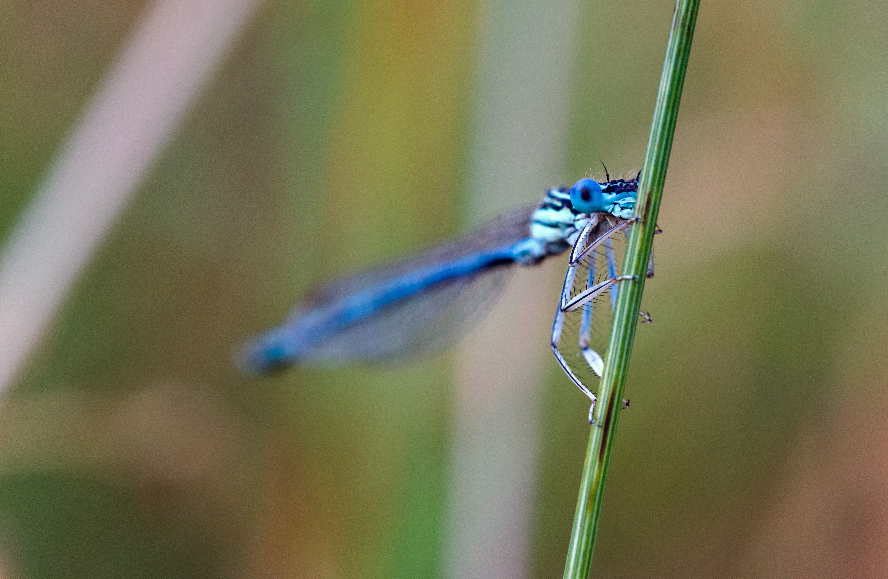
Hufeisen-Azurjungfer (wahrscheinlich)Papierwespen
Forrest Hills bei Kloof, KwaZulu-Natal, Südafrika · 2007
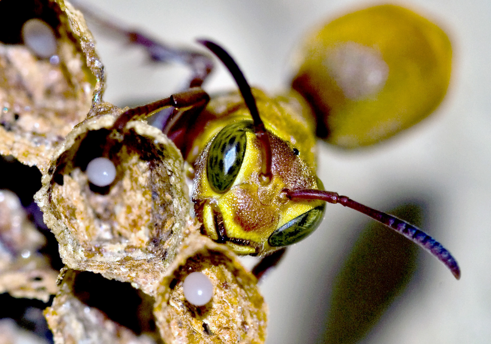
Warnhaltung am Nest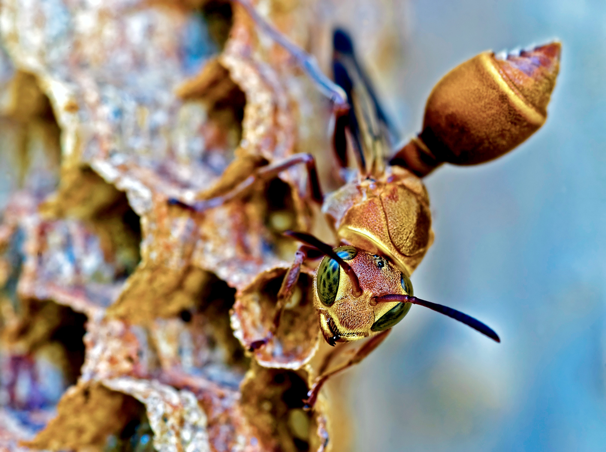
Deutliche Warnhaltung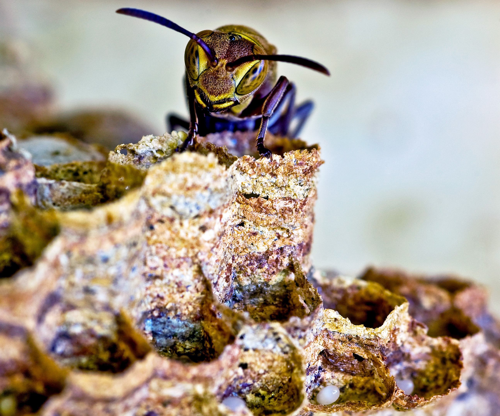
Offene Brutzellen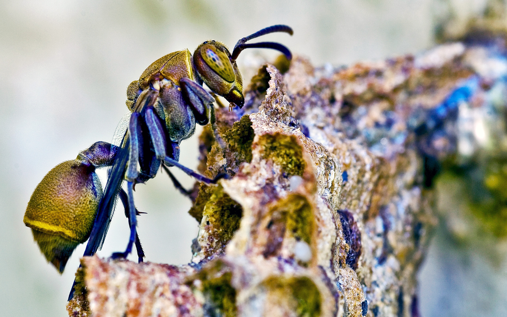
An der Papierwabe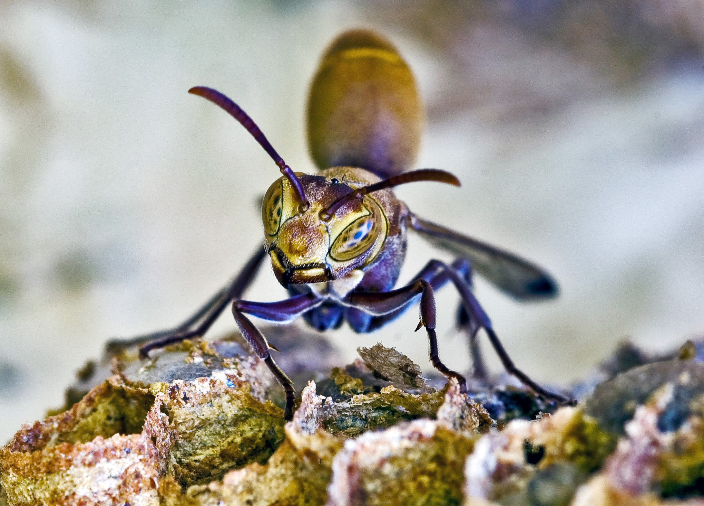
Warnhaltung · Portrait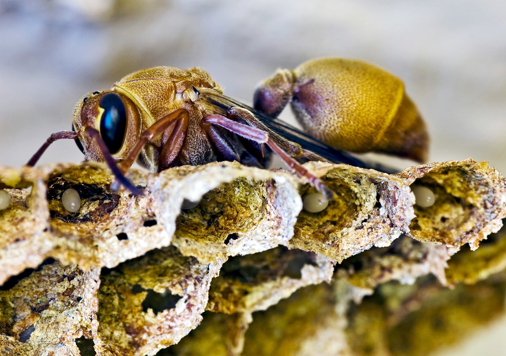
BrutzellenSpinnen
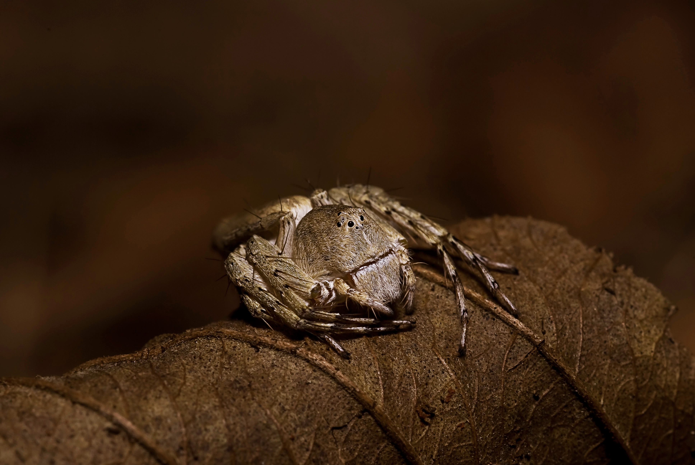
Luchsspinne · Südafrika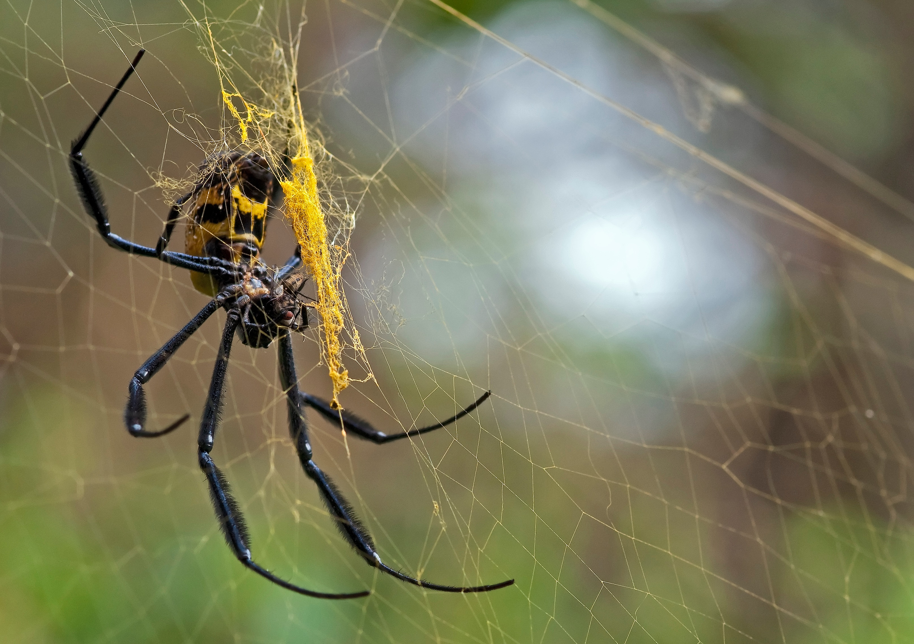
Goldene Radnetzspinne · Südafrika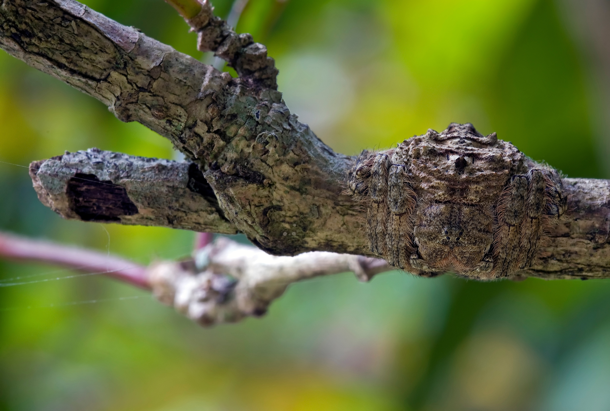
Kaum zu entdecken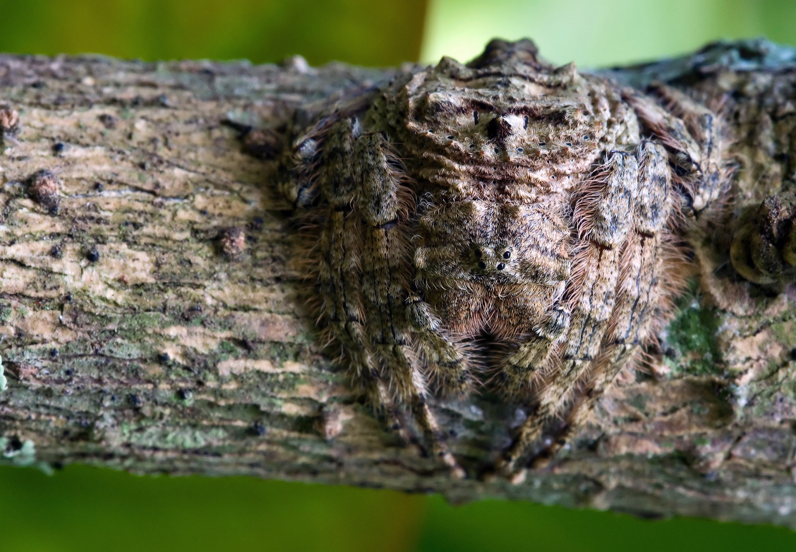
Getarnt auf Rinde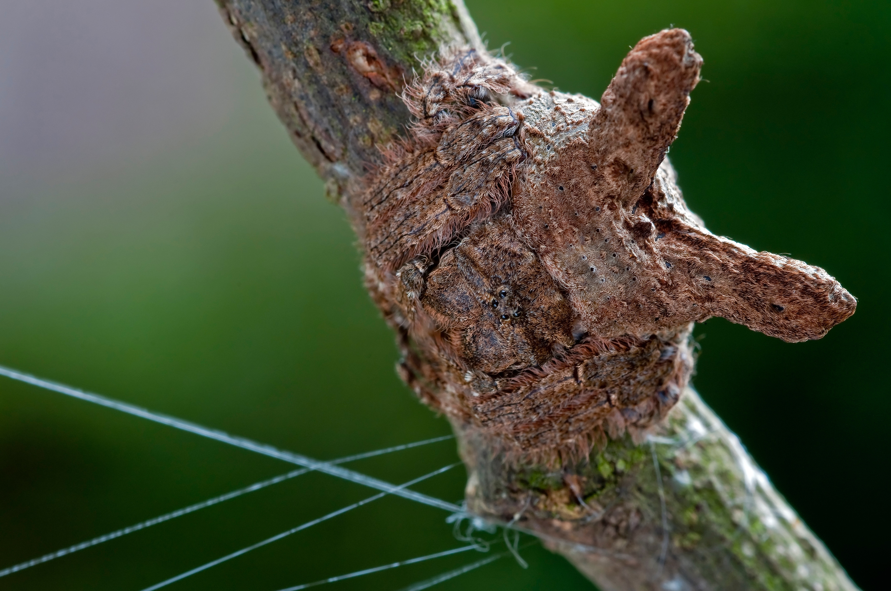
Astverzweigung?Blumen
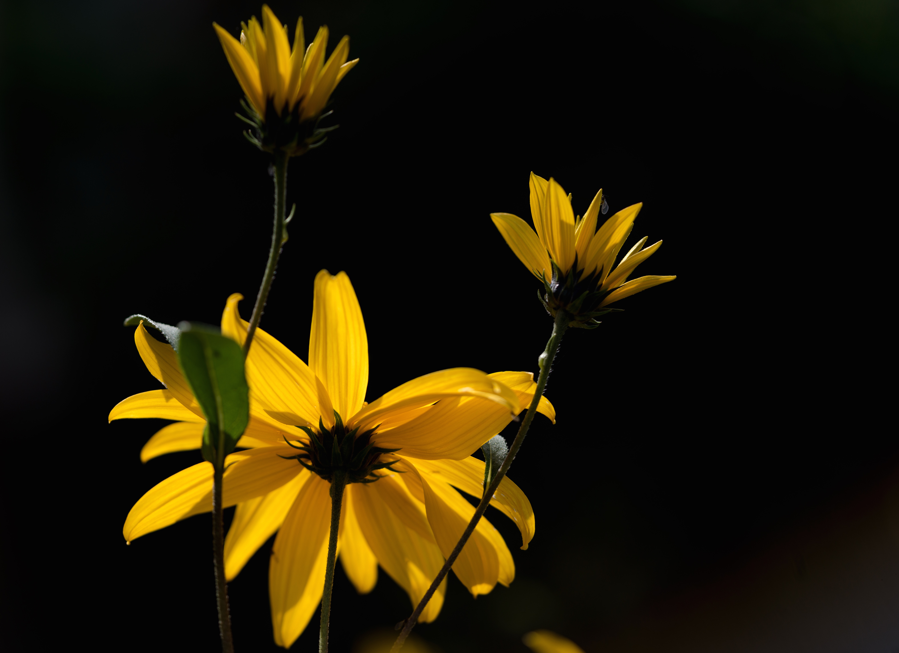
Garten-Sonnenauge (wahrscheinlich)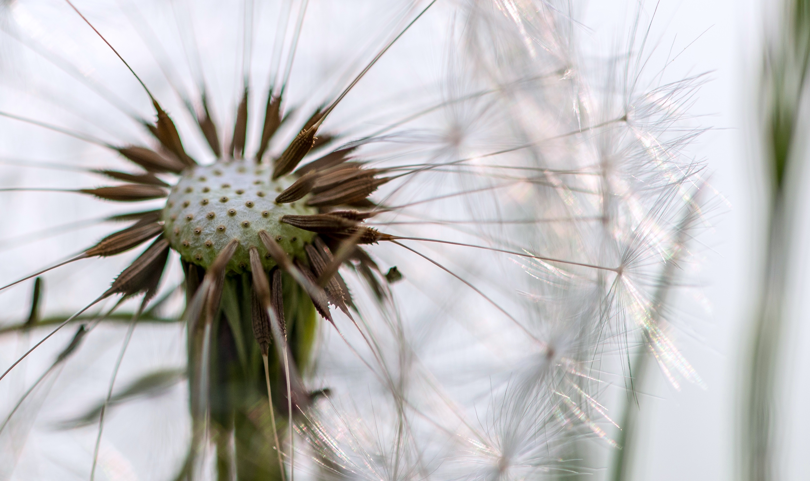
PusteblumeWeitere Themen
Reptilien & Amphibien · Pflanzen & Details · Andere Entdeckungen Bilder folgen